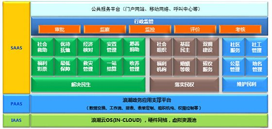

浪潮民政云解决方案，基于民政全业务平台的设计理念，建立统一的民政综合业务数据库，并在此基础上，建立覆盖民政全部核心业务的综合业务平台，从根本上解决民政业务之间的数据关联和业务协同问题。目前，浪潮民政云解决方案已经覆盖山东、江苏、重庆、内蒙、河北、黑龙江、江西等省份，为数以千万计的民政管理对象提供服务，在国内同类产品中市场占有率名列第一。

民政云解决方案包括民政综合业务平台、民政公共服务平台和民政数据分析与辅助决策平台等三个子平台。其中，民政综合业务平台基于电子政务专网，面向省、市、县、乡、村各级民政业务管理人员，提供社会救助、优待抚恤、社会组织、婚姻殡葬、基层政权、社会福利等各项民政业务的在线联网审批、数据采集、资金发放、档案管理等业务管理服务。民政公共服务平台基于互联网，面向广大民政服务对象及社会公众，提供各项民政业务的在线预约、在线申请和在线办理功能，同时实现民政各项政务工作和数据公开。民政数据分析和辅助决策平台，面向民政各级管理干部，提供民政业务数据的宏观分析和各类数据应用服务，为民政各类宏观政策制定和执行提供决策支持。
整个系统可实现民政业务基础数据信息化、业务处理网络化、决策分析智能化、服务规范标准化，事项办理便捷化和查询监管透明化，从而有效解决社会救助等工作中公开、公平、公正等问题，解决基层民政部门数据信息的准确性、及时性问题，解决与民政工作相关的财政、教育、卫生、建设等信息共享问题，为建设人民满意的服务型民政提供强有力的技术支持。